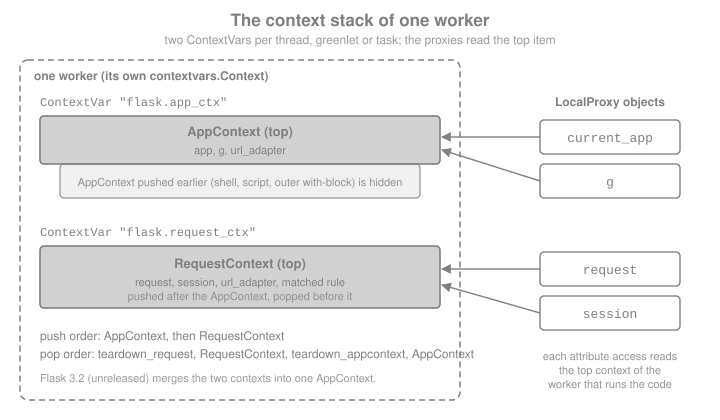

Application & Request Lifecycle
|
This content was generated with the assistance of AI and should be verified against the official documentation before being relied on in production. |
This page is written against Flask 3.1.3 (released 2026-02-19), Werkzeug 3.1.9 and Python 3.13, checked on 2026-10-07;
the examples were executed with those versions. Flask 3.2 is not released yet; what is known about it from the
official changelog (the two contexts are merged) is described as upcoming in its own section and where
it matters in the text. The page explains the part of Flask that surprises newcomers most: the objects current_app,
g, request and session look like module-level globals, yet they hold different values for every request. It
shows what they really are, when they exist, how to make them exist when you are not inside a request (scripts,
threads, tests), and everything Flask does, in order, between the WSGI server calling the application and the
response leaving it. It builds on the Bookshelf application of the previous pages and adds a request id, a per
request database connection and a small audit hook to it.
Why Flask Has Contexts
A view needs the incoming request, and many helpers (url_for, render_template, jsonify, extensions) need the
application. There are three ways to give them to your code:
-
Pass them as arguments everywhere. Explicit, but every function in the call chain grows a
requestparameter. -
Import a module-level
appobject. Simple, but it causes circular imports, and it cannot work with the application factories, reusable blueprints and extensions, where there is no singleappto import (the factory pattern is covered in the application factory page of this section). -
Use context locals: proxy objects that always resolve to the data of the request (and application) being handled by the current worker. This is what Flask does.
The official Design Decisions page lists this as a deliberate trade-off: the proxies are convenient, and they are the reason Flask code reads so briefly, but they are implicit state, and code that relies on them can only run when the right context is active. Everything below is the consequence of that one decision.
Source: Flask: Design Decisions in Flask
Two Contexts and Four Proxies
Flask has two contexts, and each one exposes two proxies.
| Proxy | Context | What it points to | Typical use |
|---|---|---|---|
|
application context |
The |
|
|
application context |
A plain namespace object ( |
Per-request resources: database connection, the authenticated user, a request id |
|
request context |
The |
|
|
request context |
The session loaded by the application’s |
Data that must survive between requests of one browser |
An application context exists whenever Flask is doing something for an application: handling a request, running a
command registered on app.cli, or inside a with app.app_context(): block. A request context exists only while a
request is being handled (or simulated). Because a request context needs an application, Flask pushes an application
context first when it pushes a request context, and pops it last.
from flask import Flask, current_app, g, has_app_context, has_request_context, request
app = Flask("bookshelf")
@app.get("/whoami")
def whoami():
g.request_note = "set during this request only"
return {
"app": current_app.name,
"path": request.path,
"in_app_ctx": has_app_context(),
"in_request_ctx": has_request_context(),
"g_has_note": "request_note" in g,
}
client = app.test_client()
body = client.get("/whoami").get_json()
assert body == {
"app": "bookshelf",
"path": "/whoami",
"in_app_ctx": True,
"in_request_ctx": True,
"g_has_note": True,
}
# Outside any request, nothing is pushed.
assert not has_app_context() and not has_request_context()
print(body)Outside a context, touching a proxy raises a RuntimeError whose message names the missing context and the fix
(app.app_context() for the application context; the test client or test_request_context() for the request
context):
from flask import Flask, current_app, request
app = Flask("bookshelf")
try:
current_app.name
except RuntimeError as exc:
print("current_app:", str(exc).splitlines()[0])
try:
request.path
except RuntimeError as exc:
print("request:", str(exc).splitlines()[0])
with app.app_context():
print("inside:", current_app.name)current_app: Working outside of application context.
request: Working outside of request context.
inside: bookshelf"Working outside of application context" and "Working outside of request context" are the two most common Flask errors. They almost never mean that Flask is broken. They mean that code which needs the application or the request ran at import time, in a thread, in a script or in a test without one being pushed. The rest of this page is the cure.
How the Proxies Work: LocalProxy over contextvars
The proxies are instances of Werkzeug’s werkzeug.local.LocalProxy, and since Flask 2.2 the "where is the current
value" part is Python’s standard contextvars. In flask/globals.py there are two ContextVar objects (named
flask.app_ctx and flask.request_ctx), and each proxy is a LocalProxy bound to one of them, optionally with the
name of an attribute: current_app is "the app attribute of the application context variable", g is its g
attribute, request is the request attribute of the request context variable, and session its session.
A ContextVar holds one value per execution context: each thread has its own, each asyncio task runs in a copy of the
context that created it, and a greenlet-based server (with the appropriate library) gets one per greenlet. That is why
two requests handled at the same time by two threads never see each other’s request, even though both threads
import the same name. The same mechanism in a few lines, using only Werkzeug and the standard library:
import threading
from contextvars import ContextVar
from werkzeug.local import LocalProxy
_current_user: ContextVar[str] = ContextVar("bookshelf.current_user")
current_user = LocalProxy(_current_user, unbound_message="No user is active.")
def handle(name: str, results: dict) -> None:
token = _current_user.set(name) # what Context.push() does
try:
results[name] = str(current_user) # the proxy resolves per thread
finally:
_current_user.reset(token) # what Context.pop() does
results: dict[str, str] = {}
threads = [threading.Thread(target=handle, args=(n, results)) for n in ("ana", "bruno")]
for t in threads:
t.start()
for t in threads:
t.join()
assert results == {"ana": "ana", "bruno": "bruno"}
try:
str(current_user)
except RuntimeError as exc:
print(exc)Source: Werkzeug: Context Locals
Three practical consequences follow from the proxy being a stand-in rather than the real object.
-
Type checks. A proxy cannot fake its type.
type(current_app)isLocalProxy;isinstance(current_app, Flask)happens to succeed because the proxy forwards__class__, but anything that looks at the exact type (type(x) is Flask, dispatch tables keyed by type, C extensions) sees the proxy. Check the proxied object instead. -
Handing the object to something else. Signals, background threads, callbacks and caches need the real object, because the proxy only resolves inside a context. Call
_get_current_object()on the proxy. The leading underscore is there so that the name never collides with an attribute of the proxied object; the method is documented and supported. -
Identity and hashing. The proxy forwards equality, hashing and most operators to the real object, which is why you can use
current_app.config[...]as if it were the dictionary, but code that stores the proxy as a key or in a long-lived structure stores something that will resolve differently later.
from blinker import Namespace
from flask import Flask, current_app
app = Flask("bookshelf")
signals = Namespace()
book_added = signals.signal("book-added")
received = []
# The receiver is connected to the real application as sender (weak=False keeps the lambda alive).
book_added.connect(lambda sender, **kw: received.append((sender.name, kw["title"])), sender=app, weak=False)
with app.app_context():
real_app = current_app._get_current_object()
assert real_app is app
assert type(current_app) is not type(app) # the proxy itself is a LocalProxy, not a Flask
book_added.send(real_app, title="Dune") # sender must be the real object
assert received == [("bookshelf", "Dune")]
print(received)flask.globals also exposes app_ctx and request_ctx proxies to the context objects themselves, and the
underlying ContextVar objects are importable. They are not part of the public API that the documentation
describes; extensions that used the removed _app_ctx_stack and _request_ctx_stack (see What Changed)
were told to store their data on g instead.
The Application Context
The application context keeps application-level data for the duration of a request, a CLI command or any other activity. Flask pushes one automatically in these situations:
-
when a request is handled (together with the request context);
-
when a command registered with
@app.cli.command()(or on a blueprint’scli) runs, so such commands no longer need@with_appcontext(Flask 2.2); -
inside
flask shell, which starts an interactive interpreter with a context pushed (the shell is covered by the CLI and shell page of this section).
Everywhere else you push one yourself with app.app_context(), as a context manager. This is the correct fix for the
RuntimeError above whenever the code in question genuinely does not belong to a request: scripts, one-off data
loading, application start-up code that needs current_app, or tests that exercise helpers directly.
import sqlite3
from flask import Flask, current_app
def init_db() -> None:
# Needs the application, so it relies on current_app rather than an imported app object.
with sqlite3.connect(current_app.config["DATABASE"]) as conn:
conn.executescript("CREATE TABLE IF NOT EXISTS books (id INTEGER PRIMARY KEY, title TEXT NOT NULL);")
def create_app(database: str = ":memory:") -> Flask:
app = Flask(__name__)
app.config["DATABASE"] = database
with app.app_context(): # pushed only while the factory configures the app
init_db()
return app
app = create_app()
print("factory finished without errors")Source: Flask: The Application Context
Storing request-scoped data on g
g is a simple namespace whose lifetime is that of the application context. The name stands for "global", meaning
global within the context. Its data disappears when the context is popped, so it is not a place to keep data between
requests: use session, a database or a cache for that. Attribute access works as usual, and the namespace also has
get(name, default), pop(name, default), setdefault(name, default), in and iteration.
The official pattern for resources is two functions: get_X() creates the resource the first time it is needed and caches
it as g.X; teardown_X() is registered with teardown_appcontext and closes it if it exists. Every call to
get_db() during a request returns the same connection, and it is closed automatically when the request ends, even
if the view raised.
import sqlite3
from flask import Flask, g
app = Flask(__name__)
closed = []
def get_db() -> sqlite3.Connection:
if "db" not in g:
g.db = sqlite3.connect(":memory:")
g.db.execute("CREATE TABLE books (title TEXT)")
return g.db
@app.teardown_appcontext
def close_db(exception: BaseException | None) -> None:
db = g.pop("db", None)
if db is not None:
db.close()
closed.append(exception)
@app.post("/books/<title>")
def add_book(title: str):
db = get_db()
db.execute("INSERT INTO books VALUES (?)", (title,)) # bound parameter, never string formatting
assert get_db() is db # same connection for the whole request
return {"count": db.execute("SELECT COUNT(*) FROM books").fetchone()[0]}, 201
client = app.test_client()
assert client.post("/books/Dune").get_json() == {"count": 1}
assert closed == [None] # closed once, with no exception
print("connection closed:", len(closed) == 1)If you want the resource itself to behave like a context local (so that code can write db.execute(...) without
calling get_db()), wrap the getter in a LocalProxy:
from werkzeug.local import LocalProxy
from flask import Flask, g
app = Flask(__name__)
def get_db():
if "db" not in g:
g.db = {"opened": True}
return g.db
db = LocalProxy(get_db)
with app.app_context():
assert db["opened"] is True # each access calls get_db() and resolves in the current context
print("proxy resolved inside the context")Two cautions about g. First, the lifetime is that of the application context, which is normally a request but is
longer for a context you push yourself (a long-running script keeps one g for its whole with block). Second,
extensions should not take attribute names that application code may use: the extension-development guidance is to
prefix them with the extension name (for example g._myextension_connection) or to keep per-application state in
app.extensions and per-context state on g.
The Request Context
The request context holds the data of one request: the Request object (request), the session (session), the
URL adapter used for routing and the result of matching the URL. Flask pushes it in wsgi_app and pops it when the
response is finished. Because a worker (thread, process or coroutine, depending on the server) handles one request at a
time, "the current request" is well defined for it, and the proxies find it through the ContextVar.
When the request context is pushed, Flask does these things, in this order (read from RequestContext.push()):
-
creates and pushes an application context, unless one for the same application is already the top one (Flask 3.1; see Flask 3.2 for the change);
-
binds the request context to the current context;
-
opens the session through
app.session_interface.open_session()(a null session if the interface returns nothing), but only the first time the context is pushed, so that streamed generators keep the same session; -
matches the URL against the routing map, so that custom URL converters can already use the session and
g. A routing failure (404, 405, redirect) is not raised yet: it is stored and raised later, inside dispatch.
Pushing Contexts Manually
The request context is a context manager too. Use it when you need request-dependent code to run outside a real
request, which in practice means tests and the interactive shell.
-
app.test_request_context(path, method=..., query_string=..., headers=..., json=...)builds a request from arguments, with no network involved. -
app.request_context(environ)builds one from a WSGIenvirondictionary, which is whatwsgi_appitself does. -
app.app_context()builds only the application context.
from flask import Flask, request
app = Flask(__name__)
def report_format() -> str:
return request.args.get("format", "long")
with app.test_request_context("/reports/2026", query_string={"format": "short"}):
assert report_format() == "short"
assert request.path == "/reports/2026"
assert app.test_client().get("/").status_code == 404 # a full simulated request, for contrast
print("helper tested with a pushed request context")With pytest, the cleanest way to test code that needs current_app is a fixture that yields inside a context, or the
test client for anything that needs a request:
import pytest
from flask import Flask, current_app
def create_app(test_config: dict | None = None) -> Flask:
app = Flask(__name__)
app.config.update(TESTING=True, **(test_config or {}))
return app
@pytest.fixture()
def app():
app = create_app({"PAGE_SIZE": 5})
with app.app_context(): # everything the test does runs inside an application context
yield app
def test_uses_current_app(app):
assert current_app.config["PAGE_SIZE"] == 5Threads, greenlets and background work
A context is bound to the worker that pushed it. A new threading.Thread starts with an empty context, so request,
current_app and g raise the RuntimeError above inside it. This is the reason older tutorials that send an e-mail
or call a slow API from a Thread started in a view fail with "Working outside of application context". You have
three options, in order of preference:
-
Do the work in a task queue (Celery, RQ) and pass plain data, not proxies. The official Celery integration makes the task run inside an application context created from the app. The background jobs page of this section covers it in depth.
-
Pass the data the thread needs as arguments, and push an application context inside the thread with
app.app_context(), using the real application object obtained with_get_current_object()(or the application you hold from the factory). -
Use
copy_current_request_contextwhen the thread genuinely needs the request: it copies the current request context (including the session object) when decorating, and pushes the copy while the function runs. It must be applied inside a request, and the copy only makes sense while the original is still meaningful: the request body may already have been read or the response sent when the thread runs, so read what you need before starting it.
import threading
from flask import Flask, copy_current_request_context, current_app, has_app_context, request
app = Flask("bookshelf")
seen: dict[str, object] = {}
@app.post("/books/<title>")
def add_book(title: str):
def broken() -> None:
seen["broken"] = has_app_context() # new thread: nothing is pushed
flask_app = current_app._get_current_object() # the real object, safe to hand to a thread
user_agent = request.headers.get("User-Agent", "unknown") # read what is needed now
def with_app_context() -> None:
with flask_app.app_context():
seen["app_ctx"] = current_app.name
seen["agent"] = user_agent
@copy_current_request_context
def with_request_copy() -> None:
seen["request_copy"] = request.view_args["title"]
workers = [threading.Thread(target=f) for f in (broken, with_app_context, with_request_copy)]
for w in workers:
w.start()
for w in workers:
w.join()
return "", 202
app.test_client().post("/books/Dune", headers={"User-Agent": "demo"})
assert seen == {"broken": False, "app_ctx": "bookshelf", "agent": "demo", "request_copy": "Dune"}
print(seen)copy_current_request_context was written with greenlets in mind and works the same for threads and, since Flask
2.1, for decorated async def functions. It is a way to keep one request’s data alive in a worker that Flask did not
create, not a way to move a request to a different request: do not reuse such a function after the response has gone,
and never share one copy between users.
The Stack and Nested Contexts
Contexts nest like a stack, per worker. Pushing a context shadows the previous one and popping it brings the previous one back. Flask uses the nesting itself (a request context pushes an application context first), and applications can use it for internal redirects or to chain applications together. In 3.1 a request context reuses the top application context only when it belongs to the same application; otherwise it pushes a new one.

from flask import Flask, current_app
catalog = Flask("catalog")
billing = Flask("billing")
with catalog.app_context():
assert current_app.name == "catalog"
with billing.app_context(): # shadows the outer context
assert current_app.name == "billing"
assert current_app.name == "catalog" # the outer one is visible again
print("contexts nested and unwound in order")Always pop in the reverse order of the pushes, which a with statement guarantees. Calling push() and pop() by hand
is possible (it is how a console session keeps a context open), and popping out of order raises an AssertionError
("Popped wrong app context" or "Popped wrong request context"). A failed pop also leaves the stack in a state that
is hard to reason about, so prefer with.
The Request Lifecycle in Order
This is the central part of the page. The official Application Structure and Lifecycle page lists the following
steps. The table below follows its numbering (the current documentation lists 27 steps, counting each signal as a step) and adds, for each, the Flask method that does the work, taken from flask/app.py
in Flask 3.1.3.
Before Flask: the WSGI server and middleware
Flask is a WSGI application (PEP 3333). The WSGI server (Gunicorn, Waitress, the Werkzeug development server…)
converts the HTTP request into an environ dictionary and calls the application object. If you wrapped the
application in middleware, the middleware runs first, outside any Flask context: no request, no current_app.
Wrap app.wsgi_app, not app, so that you keep a reference to the Flask object.
from flask import Flask, has_app_context
from werkzeug.middleware.proxy_fix import ProxyFix
app = Flask(__name__)
# Trust exactly one proxy hop for the client address, scheme and host.
app.wsgi_app = ProxyFix(app.wsgi_app, x_for=1, x_proto=1, x_host=1)
observed = []
class Timing:
"""A minimal WSGI middleware: it runs before Flask pushes any context."""
def __init__(self, wsgi_app):
self.wsgi_app = wsgi_app
def __call__(self, environ, start_response):
observed.append(("middleware", has_app_context()))
return self.wsgi_app(environ, start_response)
app.wsgi_app = Timing(app.wsgi_app)
@app.get("/")
def index():
observed.append(("view", has_app_context()))
return "ok"
app.test_client().get("/", headers={"X-Forwarded-Proto": "https"})
assert observed == [("middleware", False), ("view", True)]
print(observed)ProxyFix must only be configured with the number of proxies you really have in front of the application. Each x_*
argument says how many values to trust from the corresponding X-Forwarded-* header; trusting more than you have lets
clients forge their address, scheme or host.
Request handling
| # | What happens | Method or signal |
|---|---|---|
1 |
The WSGI server calls the |
|
2 |
A request context is created from the |
|
3 |
The application context is pushed: |
|
4 |
The |
signal |
5 |
The request context is pushed: |
|
6 |
The session is opened from the cookie (or whatever the session interface uses). |
|
7 |
The URL is matched. A failure (404, 405, redirect) is stored, not raised. |
|
8 |
The |
signal, from |
9 |
Functions registered with |
|
10 |
Functions registered with |
|
11 |
If the URL did not match, the stored routing error is raised now. |
|
12 |
The view function of the matched endpoint is called. |
|
13 |
If something raised an exception and a matching |
|
14 |
Whatever produced a value (a before hook, the view or an error handler) is converted to a |
|
15 |
Functions registered during this request with |
|
16 |
Functions registered with |
|
17 |
The session is saved (a |
|
18 |
The |
signal, from |
19 |
An exception that no error handler took is handled now: HTTP exceptions become their own response, anything else becomes a generic 500. The |
|
20 |
The response status, headers and body are returned to the WSGI server. |
|
21 |
Functions registered with |
|
22 |
The |
signal |
23 |
The request context is popped: |
|
24 |
Functions registered with |
|
25 |
The |
signal |
26 |
The application context is popped: |
|
27 |
The |
signal |
Steps 15 to 18 (and the error path of step 19) happen in finalize_request(), which runs for every response, including
one produced by a before_request function or an error handler, so the response-side hooks see them all. One detail
worth knowing: step 20 returns the response object to the server, but the response body may still be iterated
afterwards, after the teardown functions have run. A streamed response that needs the request or the application
therefore has to be wrapped with stream_with_context, covered below.
The Hooks, Side by Side
The decorators below are the extension points of the lifecycle. Application-level decorators live on the Flask
object; the same names exist on Blueprint with a blueprint scope, and before_app_request, after_app_request,
teardown_app_request, app_errorhandler and app_url_value_preprocessor register application-wide hooks from a
blueprint.
| Decorator | Runs | Receives and returns | Notes |
|---|---|---|---|
|
After routing, before |
Receives |
Typically pops a URL argument such as a language prefix and stores it on |
|
Before every request that reaches dispatch, in registration order |
No arguments. Returns |
Skips the remaining before functions and the view; |
|
After the view, for the current request only |
Receives the response, returns a response |
Registered from inside a view; the list is cleared at the end of the request |
|
After the response exists, in reverse registration order |
Receives the response, returns a response |
Not skipped for handled errors; for an unhandled exception it still runs, on the generic 500 response |
|
When the request context is popped, in reverse registration order |
Receives the exception or |
Always runs, also for manually pushed contexts; must not fail |
|
When the application context is popped, in reverse registration order |
Receives the exception or |
The right place to release resources stored on |
|
When an exception is raised during dispatch |
Receives the exception; returns a response |
Chosen by exception class (nearest base) or HTTP status; blueprint handlers win for that blueprint’s routes |
Source: Flask API: Flask
The following program registers every hook and signal, then prints what ran, in order, for a normal request, for a 404 handled by an error handler, and for a view that raises. The trace is the best way to internalise the lifecycle.
import secrets
from flask import (
Flask, after_this_request, appcontext_popped, appcontext_pushed, appcontext_tearing_down,
got_request_exception, request_finished, request_started, request_tearing_down,
)
trace: list[str] = []
def log(step: str) -> None:
trace.append(step)
app = Flask(__name__)
app.config.update(SECRET_KEY=secrets.token_hex())
signals = {
appcontext_pushed: "appcontext_pushed",
request_started: "request_started",
request_finished: "request_finished",
got_request_exception: "got_request_exception",
request_tearing_down: "request_tearing_down",
appcontext_tearing_down: "appcontext_tearing_down",
appcontext_popped: "appcontext_popped",
}
for signal, name in signals.items():
signal.connect(lambda sender, _n=name, **kw: log(f"signal {_n}"), app, weak=False)
@app.url_value_preprocessor
def pre_url(endpoint, values):
log("url_value_preprocessor")
@app.before_request
def first_before():
log("before_request 1")
@app.before_request
def second_before():
log("before_request 2")
@app.after_request
def first_after(response):
log("after_request 1")
return response
@app.after_request
def second_after(response):
log("after_request 2")
return response
@app.teardown_request
def first_teardown(exc):
log(f"teardown_request 1 (exc={exc!r})")
@app.teardown_request
def second_teardown(exc):
log(f"teardown_request 2 (exc={exc!r})")
@app.teardown_appcontext
def app_teardown(exc):
log(f"teardown_appcontext (exc={exc!r})")
@app.errorhandler(404)
def not_found(error):
log("errorhandler 404")
return {"error": "not found"}, 404
@app.get("/books")
def books():
log("view")
@after_this_request
def one_shot(response):
log("after_this_request")
return response
return {"books": []}
@app.get("/boom")
def boom():
log("view (raises)")
raise RuntimeError("boom")
def run(path: str) -> list[str]:
trace.clear()
status = app.test_client().get(path).status_code # no "with": see the testing section below
print(path, status)
for number, step in enumerate(trace, 1):
print(f"{number:2}. {step}")
return list(trace)
app.logger.disabled = True # keep the demo output free of the logged traceback
ok = run("/books")
assert ok[0] == "signal appcontext_pushed" and ok[-1] == "signal appcontext_popped"
assert ok.index("view") < ok.index("after_this_request") < ok.index("after_request 2") < ok.index("after_request 1")
missing = run("/missing")
assert "errorhandler 404" in missing and "view" not in missing
boom = run("/boom")
assert "teardown_request 2 (exc=RuntimeError('boom'))" in boomOutput for /books (the others are shown after the observations):
/books 200
1. signal appcontext_pushed
2. signal request_started
3. url_value_preprocessor
4. before_request 1
5. before_request 2
6. view
7. after_this_request
8. after_request 2
9. after_request 1
10. signal request_finished
11. teardown_request 2 (exc=None)
12. teardown_request 1 (exc=None)
13. signal request_tearing_down
14. teardown_appcontext (exc=None)
15. signal appcontext_tearing_down
16. signal appcontext_poppedFor /missing the sequence is the same until step 5; the view never runs because the stored 404 is raised after the
before hooks, the errorhandler 404 line takes its place, and the after-request, finished and teardown steps follow
unchanged (exc=None, because the error was handled). For /boom the view raises, got_request_exception is sent
before the after-request functions run on the generic 500 response, and the teardown functions receive
RuntimeError('boom').
Things to notice:
-
Hooks that run before the view run in registration order; hooks that run after (
after_request,teardown_request,teardown_appcontext) run in reverse registration order, so they unwind like nestedwithblocks. -
after_this_requestfunctions run before theafter_requestfunctions. -
request_startedis sent beforebefore_requestfunctions andrequest_finishedafter theafter_requestfunctions. -
The
got_request_exceptionsignal is sent only for exceptions that are not handled by an error handler.
Blueprints and the order of hooks
A blueprint’s hooks run only when the blueprint owns the matched route; the *_app_* variants run for every request.
Hooks of the application come first on the way in, and blueprint hooks unwind first on the way out. When blueprints
are nested, the outermost blueprint’s hooks run first. A request for a URL that matches no route has no blueprint, so
only application-level hooks run.
from flask import Blueprint, Flask, abort, request
app = Flask(__name__)
shelves = Blueprint("shelves", __name__, url_prefix="/shelves")
admin = Blueprint("admin", __name__, url_prefix="/admin")
shelves.register_blueprint(admin) # nested: /shelves/admin
trace: list[str] = []
@app.before_request
def app_before():
trace.append("app before_request")
@shelves.before_request
def shelves_before():
trace.append("shelves before_request")
@shelves.before_app_request
def shelves_app_before():
trace.append("shelves before_app_request")
@admin.before_request
def admin_before():
trace.append("admin before_request")
if request.headers.get("X-Role") != "admin": # a demonstration guard; real code uses real authentication
abort(403)
@app.after_request
def app_after(response):
trace.append("app after_request")
return response
@shelves.after_request
def shelves_after(response):
trace.append("shelves after_request")
return response
@admin.after_request
def admin_after(response):
trace.append("admin after_request")
return response
@shelves.get("/")
def shelf_list():
trace.append("view")
return {"shelves": []}
@admin.get("/stats")
def stats():
trace.append("view")
return {"ok": True}
app.register_blueprint(shelves)
client = app.test_client()
def call(path: str, **headers: str) -> tuple[int, list[str]]:
trace.clear()
status = client.get(path, headers=headers).status_code
return status, list(trace)
status, steps = call("/shelves/")
assert status == 200 and steps == [
"app before_request", "shelves before_app_request", "shelves before_request",
"view", "shelves after_request", "app after_request",
]
status, steps = call("/shelves/admin/stats")
assert status == 403 and "view" not in steps and steps[-3:] == [
"admin after_request", "shelves after_request", "app after_request",
]
status, steps = call("/nope")
assert status == 404 and steps == ["app before_request", "shelves before_app_request", "app after_request"]
print("blueprint hook order verified")A Bookshelf example: request id, per-request user and audit
The hooks fit together in the usual way. A before_request function gives each request an id and stores it on g,
an after_request function copies it to the response header, and teardown_appcontext releases anything created
lazily.
import uuid
from flask import Flask, g, request
app = Flask(__name__)
audit: list[tuple[str, str, int]] = []
@app.before_request
def assign_request_id():
# Accept an id from a trusted proxy if it is well formed, otherwise generate one.
incoming = request.headers.get("X-Request-ID", "")
g.request_id = incoming if incoming.isalnum() and len(incoming) <= 64 else uuid.uuid4().hex
@app.after_request
def expose_request_id(response):
response.headers["X-Request-ID"] = g.request_id
audit.append((g.request_id, request.path, response.status_code))
return response
@app.get("/books")
def books():
return {"books": [], "request_id": g.request_id}
client = app.test_client()
resp = client.get("/books", headers={"X-Request-ID": "abc123"})
assert resp.headers["X-Request-ID"] == "abc123" and resp.get_json()["request_id"] == "abc123"
resp = client.get("/books", headers={"X-Request-ID": "bad id; x"})
assert resp.headers["X-Request-ID"].isalnum() and len(audit) == 2
print(audit[0][1:], "->", resp.headers["X-Request-ID"][:8], "...")Source: Flask API: after_request
Validating the incoming id matters: a value copied from a client into a response header and into logs without checks is a header-injection and log-forging vector.
Errors and Teardown
Exceptions are handled in two places, which is easy to confuse.
-
handle_user_exception()runs insidefull_dispatch_request(). It translates exceptions raised by before hooks, the view or routing into a response by finding anerrorhandler(HTTP exceptions such asabort(404)included). Anything it handles looks like a normal response to the rest of the lifecycle, and teardown functions receiveNone. -
handle_exception()runs inwsgi_app()for an exception that nobody handled. It sendsgot_request_exception, logs the traceback throughapp.logger, and returns a generic500 Internal Server Error, unlessPROPAGATE_EXCEPTIONS(which defaults to true whenTESTINGorDEBUGis on) makes it re-raise. In debug mode this is what lets the interactive debugger see the traceback; the debugger must never be enabled in production, because it allows arbitrary code execution.
The teardown functions are independent of dispatch. The contexts call them when they are popped, so they run when a before
hook short-circuited, when the view raised, and when you pushed the context manually. That has a direct rule:
write teardown functions so that they do not depend on any other callback having run, and so that they cannot fail.
For example, g.pop("db", None) rather than g.db, because get_db() may never have been called.
In Flask 3.1 an exception raised by a teardown function propagates and the teardown functions that would have run after it (the ones registered earlier) are skipped. The next example shows it; Flask 3.2 changes this (see below).
from flask import Flask
app = Flask(__name__)
ran: list[str] = []
@app.teardown_request
def release_lock(exc):
ran.append("release_lock") # registered first, so it runs last
@app.teardown_request
def flush_metrics(exc):
ran.append("flush_metrics")
raise ValueError("metrics backend is down")
@app.get("/")
def index():
return "ok"
app.logger.disabled = True
try:
app.test_client().get("/")
except ValueError:
pass
print(ran) # Flask 3.1: ['flush_metrics'] - release_lock never ran
assert ran == ["flush_metrics"]The lesson is to wrap risky work in a teardown function in its own try / except and log, whichever Flask version
you run. Flask.should_ignore_error() exists in 3.1 as a hook that lets a subclass say that an exception should not be
passed to the teardown functions; Flask 3.2 deprecates it, and handling the error in the teardown function is the
recommended replacement.
Contexts in Tests
By default each test client request pushes and pops its contexts, so request and g are gone when
client.get(...) returns. When a test needs to look at them afterwards, use the client as a context manager: the
contexts stay pushed until the with block exits.
from flask import Flask, g, request
app = Flask(__name__)
events: list[str] = []
@app.get("/books")
def books():
g.checked = True
return {"books": []}
@app.teardown_request
def note_teardown(exc):
events.append("teardown_request")
with app.test_client() as client:
client.get("/books?page=2")
assert request.args["page"] == "2" # the request context is still pushed
assert g.checked is True # and so is the application context
assert events[0] == "teardown_request" # teardown has run for the request
print(events)Since Flask 2.2 the teardown functions always run at the end of the request itself, even when the context is
preserved, and run again when the preserved copy is popped at the end of the with block. A teardown function that
is not idempotent will therefore look as if it ran twice in such a test; this is why they must tolerate being called
when there is nothing left to release.
Streaming Responses and Late Access to the Context
The body of a response can be generated lazily, after the view returned and after the contexts were popped. A
generator that reads request then fails with the RuntimeError seen at the beginning. stream_with_context keeps a
copy of the request context pushed while the generator is consumed.
from flask import Flask, Response, request, stream_with_context
app = Flask(__name__)
@app.get("/export")
def export():
def generate():
yield f"# export for {request.args.get('shelf', 'all')}\n" # needs the request
for title in ("Dune", "Emma"):
yield title + "\n"
return Response(stream_with_context(generate()), mimetype="text/plain")
body = app.test_client().get("/export?shelf=sci-fi").get_data(as_text=True)
assert body.splitlines()[0] == "# export for sci-fi"
print(body)Source: Flask: Streaming Contents
Streaming responses, server-sent events and the server settings that make them work are covered by the streaming page.
Contexts and async def
Since Flask 2.0 views, error handlers and the before, after and teardown hooks may be async def, with flask[async]
installed. Flask runs each of them through ensure_sync, and the contexts are available inside them as usual. An
async view still occupies one worker per request, so the lifecycle above is unchanged. How that works and its limits are
the subject of the async, gevent and Quart page of this section.
Source: Flask: Using async and await
Pitfalls and Security
| Pitfall | Symptom | Fix |
|---|---|---|
Using |
"Working outside of application context" |
Move the code into a view, a CLI command, or a |
Importing |
Circular imports; no way to use the factory pattern |
Use |
Starting a thread from a view that uses proxies |
"Working outside of application context" in the thread |
Pass plain data, push |
Storing per-request state in module-level variables |
One user sees another user’s data under concurrency |
Store it on |
Treating |
Value missing on the next request |
|
Modifying the app after the first request ( |
|
Finish all setup in the factory before serving |
Raising in a teardown function |
Other teardown functions skipped (3.1); a failing request that is hard to debug |
Guard teardown code; log instead of raising |
Reading |
"Working outside of request context" during iteration |
Wrap the generator with |
Running |
Remote code execution through the interactive debugger |
Use a production WSGI server and keep debug off |
The security-relevant points follow from the table. Per-request data must live on g or in the session, never in
globals: a global is shared by every request that the worker handles, and under threads it is shared concurrently.
Anything copied from the request into a header, a log line or a template must be validated or escaped, as the request id
example shows. The session cookie that session exposes is signed with SECRET_KEY, not encrypted, so nothing secret
should be stored in it; the key itself must be generated (for example with python -c "import secrets; print(secrets.token_hex())")
and loaded from the environment or a secret store, never committed. The configuration and session pages of this section
cover these in detail.
What Changed and Where Older Material Is Outdated
Tutorials and books written for Flask 1.x and early 2.x describe an application lifecycle that no longer matches the code. These are the differences that affect this page, with the versions in which they happened.
| Version | Change | What to do instead |
|---|---|---|
0.9 and later |
Teardown functions receive the exception that ended the request |
Use the |
2.0 |
|
Install |
2.1 |
|
Use |
2.2 |
Contexts are managed with |
Nothing for application code; it is faster and uses less memory, and works with greenlets and asyncio tasks |
2.2 |
|
Do one-time setup when creating the application, in the factory |
2.2 |
Custom CLI commands on |
Remove the decorator; an app context is already pushed |
2.2 |
Teardown functions always run at the end of the request even when the context is preserved (debugger, |
Make teardown idempotent |
2.3 |
|
Move the code to the factory |
3.0 |
The context stack objects are gone (they are not present in 3.1.3); |
Store extension data on |
Source: Flask: Changes
In practice, when you meet these in older code:
-
@app.before_first_request(removed): build resources increate_app()or lazily with theget_X()pattern. -
_request_ctx_stack.top.somethingand_app_ctx_stack.top.something(removed): store the value ong. -
app.app_context().push()at module level in a script, never popped: a global leaked context, which hides application-context bugs in production. Use awithblock. -
A
Threadsending e-mail from a view without an application context: use a queue or push a context in the thread, as shown above. -
make_celerywith aContextTasksubclass and upper-caseCELERY_*settings (the Celery 3 style): replaced by the officialcelery_init_apphelper with aFlaskTasksubclass, which pushesapp.app_context()around each task, and aCELERYconfiguration dictionary with Celery 5 lower-case settings. -
Describing contexts as "thread locals": they are
contextvarssince 2.2, which is why they also work correctly with asyncio tasks and greenlets.
Coming in Flask 3.2 (unreleased)
As of 2026-10-07 the latest release is Flask 3.1.3 and the changelog lists 3.2.0 as unreleased, so the details can still change. These items concern this page:
-
RequestContextis merged intoAppContext, andRequestContextbecomes a deprecated alias. An already pushed application context is no longer reused when a request is dispatched: every request pushes its own. The twoContextVarobjects and the stack of this page’s figure simplify to one context that carries both the application and request data. The documented proxies (current_app,g,request,session) keep working, so application code does not change; code that importsflask.ctx.RequestContext, subclasses it or uses internals such as the context variables is affected. -
Many
Flaskmethods involved in request dispatch take the currentAppContextas the first parameter instead of reading the proxies. Subclasses that override them keep working during the deprecation period, with a warning, as the old signature is detected. -
All teardown callbacks run even if one of them raises (see the example in Errors and Teardown).
-
should_ignore_erroris deprecated; handle errors in teardown handlers instead. -
Other items of the 3.2 changelog (Python 3.9 dropped,
flask.__version__removed,redirect()defaulting to 303, the template decorators usable without parentheses,provide_automatic_options=Trueper view, anapp.querydecorator for the HTTPQUERYmethod) are covered where they belong, and the section’s migration page collects them in one table.
To be ready: use with app.app_context() and with app.test_request_context() (both stay valid), do not import or
subclass RequestContext, do not touch _cv_app or _cv_request, and make every teardown function safe to run
even if another one failed.
Summary
-
current_appandgbelong to the application context;requestandsessionbelong to the request context. All four areLocalProxyobjects that resolve throughcontextvars, per worker. -
A request pushes the application context, then the request context; the response is returned to the server before the teardown functions run and the contexts are popped in reverse.
-
Outside a request, push what you need yourself with
with app.app_context()orwith app.test_request_context(). -
Hooks before the view run in registration order; hooks after it run in reverse. Teardown always runs and must not fail.
-
Never hand a proxy to another thread: pass data, or
_get_current_object(), or usecopy_current_request_context. -
One-time setup belongs in the factory; the removed
before_first_requestand the context stacks are not coming back.